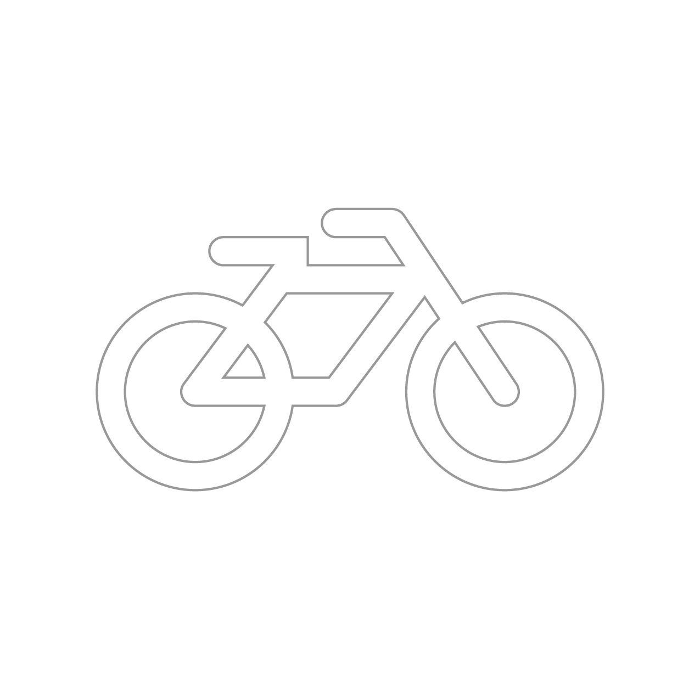

|  |
| Who Goes |
| COGO? |
|
CoGo Bike Share allows thousands of Columbus citizens access to cheap, temporary
transportation. But who is the service really for? Using data
collected by the City of Columbus and CoGo, this visualization highlights 47 bike
share stations in context with the people who live and work nearby.
|
|
|